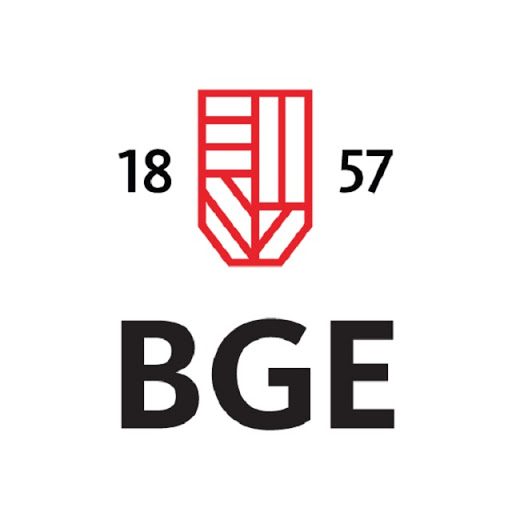

Budapesti Gazdasági Egyetem

A szak
2019 szeptemberében kezdtem itt a tanulmányaimat Pénzügy- és Számvitel szakon. 2 félév elvégzése után passzív félévet kezdtem meg, ugyanis egy másik intézményben, a Budapesti Műszaki és Gazdaságtudományi Egyetemen is megkezdtem tanulmányaimat.
Duális Képzés
A tanulmányaimat duális képzés keretein belül kezdtem meg. 1 évet töltöttem a WTS Klient Kft.-nél könyvelő gyakornoki pozícióban.
Céljaim
2021 szeptemberétől levelező tagozaton szeretném folytatni a szakot, így a jelenleg megkezdett szakommal együtt, párhuzamosan tudom elvégezni a két egyetemet.